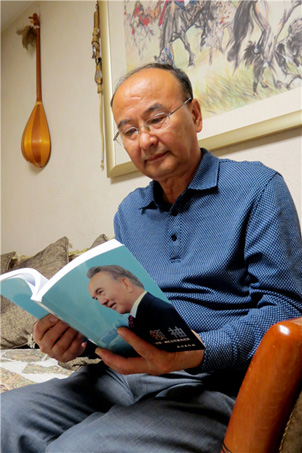

贾尔肯 哈语译坛上的“铁人”
来源：中华儿女报刊社

战旗猎猎，战车奔腾。天安门城楼前，阅兵方队铿锵通过……
2015年9月3日这一天，哈萨克族的观众、听众打开电视或广播，看到或听到的是隆重举行的抗战胜利70周年阅兵式，精准、地道的哈语翻译让大家感受到抗战胜利日首次大阅兵的热烈氛围。
极少人知道，有一个翻译团队此前已为这次实况直播在北京怀柔准备了10余天。贾尔肯就是这个团队的核心专家成员，为这次盛大阅兵的哈语翻译作出了自己的努力。直播圆满完成，他沉甸甸的心才放下。贾尔肯说：“这不只是完成工作，还有一种职业的荣誉感。”
亲历全国两会、党的代表大会、党和国家重要文献的翻译与审核……贾尔肯作为民族语文翻译战线上的资深翻译专家无数次感受到职业的自豪感。几十年来，他兢兢业业、任劳任怨地打拼在哈语译坛上，成了地地道道的“铁人”。
与翻译职业的美丽邂逅
1975年5月，贾尔肯被借调到中央民族出版社。在这里，他第一次正式接触到用少数民族文字编译出版的马克思列宁主义经典著作、党和国家领导人的著作、中国共产党和国家的重要文献等，特别是直接参加《列宁文选》单行本和《红旗》杂志的翻译工作让自己的翻译水平再上层楼。“在这里干了一年零两个月，因为我父亲病重，1976年7月又回到了新疆。”
其实，贾尔肯在小学阶段上的是哈语学校。11岁那年，贾尔肯小学毕业，以功课三门100分、两门98分的优异成绩考入伊宁市第八中学。“这所学校是汉语学校，那个时候招收少数民族学生。我以前没有学过汉语，有幸作为第二批汉语班学生招录进去，班上有近30人。”由于“文革”的影响，中途停课两年多，“1969年复课，1970年初中毕业，被下放到昭苏县团结牧场放牧队接受贫下中农再教育”。放牧队劳动没几天，牧场场部翻译因有历史问题被“打倒”。由此，场部每天晚上的批判会无法进行，东找西找都找不到翻译。一天，有人听说知青联一个哈萨克小伙子懂汉语，硬是把贾尔肯拉过来当翻译。
半年后，场部为了把他培养为正式翻译，送他进伊犁师范学校翻译班进修，“主要学习的是翻译理论、翻译技巧及相关实践。翻译班的两年学习期满，原本是回原单位，结果被昭苏县委组织部安排到县食粮局当翻译”。
贾尔肯的翻译生涯顺风顺水地往前走着，一切顺其自然，似乎是命运的安排。在粮食局说是当翻译，“其实还兼秘书、统计员、粮店主任等好几个岗位的职务”。当年，每到春季县里举行四级干部会议，需要翻译，贾尔肯又被抽到县里任临时翻译。一时间，大家都知道有个叫贾尔肯的哈语翻译挺棒的，每每碰面会有人亮出大拇指称道。
贾尔肯做梦也没有想到有机会被借调进北京，到民族出版社做翻译。“当时，出版社的一个负责人在北京站接我时见我很年轻，用不屑的目光看我，问：‘你是来当翻译的？’第一天，他给了一篇《红旗》杂志上的文章给我翻，看我在很短的时间内翻出来了、翻得还不错，才对我产生信任。”当年从被冷遇到刮目相看的细节，贾尔肯还记忆犹新。三个月的借调期满，贾尔肯被通知延长借调，这个时候他感受到了作为翻译的职业感。
一年后贾尔肯因为父亲重病而中断在民族出版社的借调，返回新疆。父亲病故后料理完后事，贾尔肯准备回粮食局工作，被伊犁地委组织部通知赴伊犁州委党校翻译班任教，主要讲汉哈语法对照。在借调期间，经过专业的翻译实践锻炼，他的翻译业务更加成熟，因此在州委党校任教期间得心应手。“党校翻译班有100多名学生，只有两名老师。另一个只教汉语语法，我把100多个学生分了两年快班和三年慢班两个班，自编教材，教书育人。”今天，贾尔肯自豪地说，当年他所培养的学生遍布新疆各个地方媒体、文化事业单位，有的还当上了厅级官员。
1979年10月的一天，一阵急促的电话铃声响了。这个电话改变了贾尔肯的人生走向。他被通知正式调到中国民族语文翻译局工作。贾尔肯对这突如其来的消息还真有点摸不着头脑，就又跑到组织部门去核实，结果那里的负责同志说他的所有人事手续都已办到北京了，赶快去报到吧。
这时贾尔肯才知道，世界上任何一个国家都还没有像我们国家成立有能翻译少数民族文字的专门机构——中国民族语文翻译局。事实上，北京虽许多人向往，但由于生活习惯等原因，一些少数民族地区的翻译工作人员并不愿意到北京工作。贾尔肯此时此刻，心情难以平静，是喜、是忧，说不上来。正谈着对象怎么办，能一起去北京吗？万万没有想到的是，他刚刚试着提出这个问题，组织上就答应了：你们双双调入北京。后来，贾尔肯才清楚，原来是自己被借调民族出版社期间的一个同事被介绍到翻译局工作，这个同事又推荐了他到翻译局工作。
这一年，北京的秋天似乎于贾尔肯是特别的美。此时的北京，道路两旁绚丽多彩，特别是那金黄的银杏绽放着灿烂的容颜，令人喜爱。天空蓝得一泻千里，而且很高朗、明媚。尽管此前来过北京两次，但这次意义不同。一下车，贾尔肯做了一个深呼吸，立刻感到五脏六腑都明亮起来，整个精神状态空前地拔地振奋。
倾国家之力，使中国民族语文翻译局集中了全国最顶尖的民族语文学者、各民族的文化精英。随着工作的深入，贾尔肯在这里再次接受更深入的实践锻炼和业务培训，专业知识、业务水平不断提高，翻译才干更深层次的历练，渐成中国民族语文翻译局素质高、能吃苦、能打硬仗的顶梁柱。
以过硬业务能力为民族工作服务
到翻译局后，贾尔肯从最基层的翻译做起，一步一个脚印，先后任翻译组组长、哈文室副主任，并通过竞聘担任哈萨克语文室主任。
2001年，哈文室先后有三位骨干业务人员退休。由于他们的退休，加之年轻人业务方面有待成熟，难于胜任重大翻译任务，这使哈文室一度陷入业务骨干青黄不接的困境，任务重、工作量大，压在贾尔肯肩上的担子重如千斤，压力之大可想而知。就在这时，哈文室的任务比往年增加了，除了中华人民共和国法律汇编、全国人大政协会议文件等党和国家重要文件的正常翻译之外，还增加了新的项目——《汉哈新词术语辞典》的编纂。在任务要完成、质量要保证、人员紧缺的情况下，如何最大限度地调动和发挥好大家的积极性，挖掘有限的潜力，保质保量地按时完成翻译局安排的各项工作任务——这是一个严峻的挑战。贾尔肯在压力和困难面前没有退缩，也没有向上级领导提出任何条件和要求，而是迎着困难上，肩挑重担往前闯。
他根据任务的轻重缓急，科学合理安排工作。特别是打破了旧框框，大胆地任用年轻有为的同志担任责任翻译工作，给他们压担子，提要求，在实践中磨砺，在实践中提高，极大地调动了大家的积极性。在贾尔肯的带领下，哈文室终于完成了任务。
为了提高自己的业务技能，他曾在改革开放的初期、在工具书奇缺而没有复印机的年代里，费尽种种努力借到专业书籍《哈萨克语详解辞典》，利用几个月的业余时间白天黑夜不停地抄写，用蚂蚁啃骨头的毅力，最后抄完了这本100多万字的巨著，他这种如饥似渴地发奋学习的劲儿也影响身边的同事。
2003年9月26日，新华社发出消息：中国与哈萨克斯坦边界线正式勘定，按照新勘定的国界线，部分地段的军事控制权将以和平、友好的方式进行交接。报道中说，根据中哈两国签订的《中哈国界协定》、《中哈国界补充协定》、《中俄哈三国交界点协定》和《中吉哈三国交界点协定》的规定，中哈联合勘界委员会工作人员于1996年至2001年期间踏遍了边界线上的山山水水，绘制了详细的边界地图，历时6年完成了勘界工作，2002年5月10日中哈两国外长签署了《中华人民共和国政府和哈萨克斯坦共和国政府关于中哈国界线的勘界议定书》及其附图，在双方各自完成了国内法律程序之后，于2003年7月29日正式生效。普通民众难以从这不长的消息中读出一位民族语文翻译工作者在其中所做的努力。
贾尔肯翻译水平高，深得外交部的信赖，曾经先后5次特邀贾尔肯参加中国—哈萨克斯坦边界勘定谈判，并任命他为中方哈萨克文本边界文件起草组组长。俄汉文文件有4人审定，哈文则只有贾尔肯一人审定。在工作任务繁重、责任重大的情况下，贾尔肯高效率、高质量地完成了这项光荣而艰巨的任务，先后共审定了800多页十六开本的文件。在和哈萨克斯坦共和国专家协作的过程中，贾尔肯坚持原则，维护国家利益，指出并纠正了哈萨克斯坦方面在哈萨克文表述中存在的严重错误，得到了双方谈判代表的高度评价。最后时任中国政府总理朱噷基和时任哈萨克斯坦总统纳扎尔巴耶夫在该文件上签字，几百年来两国的边界之争终于画上了圆满的句号。
以特别身份见证国是
1981年，27岁的贾尔肯第一次以翻译的身份参加到全国两会工作当中。此后，每年的全国两会成为他的忙碌时光。
作为国家级少数民族语文翻译机构，中国民族语文翻译局历年都会组建两会民族语文翻译组，负责将会议文件翻译成蒙古、藏、维吾尔、哈萨克、朝鲜、彝、壮等7种民族语言文字。为了确保能将一些会议材料提前翻译并印制出来，贾尔肯和翻译组其他工作人员一般提前近半个月入住驻地，开始夜以继日的翻译工作，短短十几天的时间里要完成平时4个月的任务，即近40万字。如果是两会换届年，那么翻译组仅翻译新一届政府领导人简历就有二三十万字。由于哈萨克文中要用到很多连接词，哈文翻译出来一般会比汉语多出百分之三十。
汉文文件一般都是白天讨论修改，等翻译拿到汉文最后定稿样的时候，一般都是在会上宣读该文件的前一天晚上。不连夜加班加点地干，文件第二天就根本没法按时、保证质量地提供给参会的少数民族代表委员。为此，有时贾尔肯和其他翻译要连着几个晚上连续作战，凌晨的时候只睡一两个小时，第二天一早又要开始新的战斗。
“每天晚上干到11点钟是很正常的，有时候甚至干到凌晨两三点。”对贾尔肯来说，这种紧张的工作节奏他早已习以为常。在前后三四个星期的时间里，翻译组的同志们没有一个休息日。贾尔肯笑着说，有时候工作量会少一点，同志们就利用这样的机会在驻地稍微休息调整一下，随时准备迎接新的翻译任务。
作为主任，这个时候压在贾尔肯肩上的担子更重。每次他都是最早一个来干活，最后一个去休息。一个月下来，他的脸都熬成了铁青色。因此大家给他取了一个雅号，叫做“铁人贾尔肯”。
全国两会民族语文翻译组由来自10多个民族人员，虽然组内民族众多，但是不论是工作、用餐还是休息，大家的关系都十分融洽，气氛温馨，整个翻译组犹如一个大家庭。每年全国两会哈萨克族的代表委员不到10个人，但为两会翻译哈萨克文的工作人员有20多人。贾尔肯说：“我们的工作并不是仅仅为那几位参会的代表委员服务，我们所做的其实是在为一个民族服务，那几位代表委员背后站着的是150万哈萨克族人民。”
贾尔肯做过10年全国两会的现场同声传译工作。虽然现在很多少数民族代表委员能听懂汉语，但是贾尔肯依旧认为现场同声传译还是十分有必要的。“首先能在全国两会上听到自己本民族的语言，少数民族代表委员们会感到十分亲切。这在民主政治上也体现了各民族一律平等。大会举行时，我们在大会堂的四层同声传译室现场翻译。”近年来，他尽管不再做现场同声传译，但还是要到现场指导年轻的哈文同声传译员，给他们讲解要注意的事项。
这么多年的全国两会翻译工作，让贾尔肯不仅见证着中国民主政治建设的进程，而且让他见证民族语言翻译学的发展，每个时间段都有一些让他在翻译过程中记忆深刻的词。
1981年到1993年，贾尔肯记忆最深刻的就是“市场经济”跟“改革开放”这两个词。这个时期，改革开放刚刚开始，大量新词术语涌入，之前的那些词语体系完全不够用，因此这一时期贾尔肯和同事们的主要工作是制订和规范了大量的新词术语，从而为以后的翻译工作奠定了基础。1993年至2003年，贾尔肯明显感觉到金融、经济和法律方面的新词增多，例如A股B股、互联网、光盘等等。2003年之后，领导人理科出身的较多，因此一些领导人在讲话的时候会把理科上的一些词用到政治上，例如“冰点”、“热点”。同时，这一时期古语谚语的引用也很多。为了应对这种情况，贾尔肯这些翻译人员事先就将唐诗三百首翻译好，但领导人引用的古诗又往往不在这三百首的范围之内，这种情况下又不得不先将诗词意思重新翻译出来，再找本民族的诗人将翻译出来的意思再做作成诗。近几年，贾尔肯感觉在翻译过程中出现最多的就是“中国梦”、“深化改革”这两个词。“‘梦’这个字在哈萨克语里的意思是不可能实现的，因此我们在翻译‘中国梦’的时候就将它翻译成了‘中国的愿望’，‘愿望’是可以实现的。”除了全国两会，贾尔肯还参与过自十五大以来的所有党代会文件或讲话稿的翻译工作。
贾尔肯在规范和统一名词术语方面发挥了领军人物的作用。名词术语的翻译需要科学的方法和严格的规则，同时要具备深厚的语言功底，他通过与翻译机构和专家交流，搜集大量的第一手资料，为全国哈萨克语名词术语规范会议提供了近700条新名词术语，为做好名词术语的科学翻译、统一规范打下了坚实的基础。他担任《汉哈新词术语词典》的编纂工作，大量删除不再新颖的词语，新增了有关改革开放、市场经济、财政、网络语言、电脑术语等10000多条新词语，满足了当前翻译业务需要，在规范和统一名词术语方面发挥了重要作用。
爱徒步走的“铁人”
哈文室年龄较长的几位翻译专家对计算机望而生畏，避而远之，都觉得自己手脚不灵，对掌握高科技没有自信。但是，贾尔肯从来不向年龄低头，反而怀着强烈求知欲和超人的毅力，虚心向年轻人请教计算机操作技术，反复练习，经过努力而很快熟练掌握了哈萨克文微机录入排版系统。现在贾尔肯的录入速度甚至比一些年轻人还要快，而且还掌握了基本的排版技术，能够处理一般的技术故障。他以自己的实际行动极大地鼓舞了大家好学上进的热情。
作为哈文室主任，贾尔肯在保证经典著作及党和国家文件翻译的质量方面负有重大的责任，因此他所承受的压力也很大。白天他要尽职尽责地完成千头万绪的份内工作，到了晚上，为了把好质量关，他下班回家以后还要继续从事繁重的翻译审稿工作，常常加班加点到深夜两三点。为了工作，他不知牺牲了多少本应该属于自己享受的业余休闲时光。
他像机器，不停地运转，总是超负荷地工作，每到年底的时候他的工作量都会大大超出同事。比如，有一年，他总共完成了418天的工作量。但是年终按工作量分配岗位津贴时，放弃贾尔肯却自动放弃了超出的工作量。他的这种吃苦在先、享受在后的大公无私的精神深深感动和激励着身边的同事。
2005年，按计划在年底《汉哈新词术语辞典》和马克思的《资本论》哈文翻译必须发稿，另外还有全国人大政协会议文件、法律汇编和中央领导重要讲话等的翻译任务。同时，还要认真组织好支部的有关学习。别的不说，单就深奥的《资本论》足够哈文室全体人员翻译一年。任务很重，真正能够坐下来从事业务的时间屈指可数。就在大家拼命地挤时间、赶速度的时候，由于劳累过度和长时间伏案工作，贾尔肯右下肢开始浮肿。开始他没有理会，后来脚肿得连鞋子都穿不上了，还伴有低烧。经大家劝说他才到医院检查，后来确诊是丹毒，需要打吊针输液。医生劝他要按时打针吃药，好好养病。因实在走不了路，他才在家里休息了几天。他就算在家里，也心急如焚，如坐针毡，一刻也闲不住，一心想着工作的进度。无奈之下，他利用电话及时和大家联系同，指挥大家作战。为了尽快消肿，医生要求他把脚必须平放和抬高躺着。他躺在床上慢慢侧着身子继续翻译和审稿，使人们真真切切地看到了一个抱病工作的铁汉形象。没过几天，病还没痊愈，他就急着来上班了。由于需要伏案工作，血液集中到脚部回流困难，每到下午他的脚背都肿得很高。下班时他艰难地一瘸一拐地走路。脚肿得一时好不了，无奈之下整个夏天他只好穿着一双宽大的拖鞋上班。贾尔肯就是这样，像一个年轻人拼着命在工作，像一团火不熄地燃烧。
贾尔肯的爱好不多，除了游泳，就是喜欢徒步走，没有特殊情况每天走10公里。他走路的速度十分快，比常人正常走路的速度快两三倍。他的这个习惯源于他早年上小学每天来回要走10公里路，到了中学这个数字则变成了24公里。他走路有一个特点就是喜欢在马路牙子上走，他说在这上面行走需要时刻保持平衡，因此全身都会感到紧张，热量会消耗得更多，同时还能练习吸气收腹，更为重要的是还能锻炼脑部注意力的集中——翻译工作过程中保持注意力的高度集中是十分重要的一项要求。
“只要活着，就要运动。这是我的座右铭。”如今，贾尔肯退休了，但是他仍然忙个不停，不是作为专家去指导有关民族翻译工作，就是参与有关译稿的审定，一如他的快节奏的步伐，难以停歇下来。（记者/余玮）